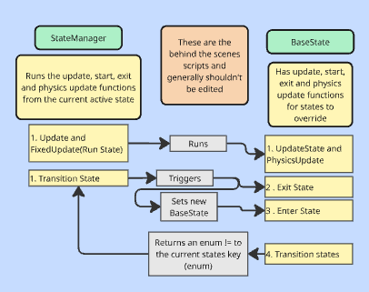
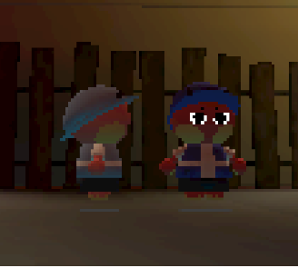
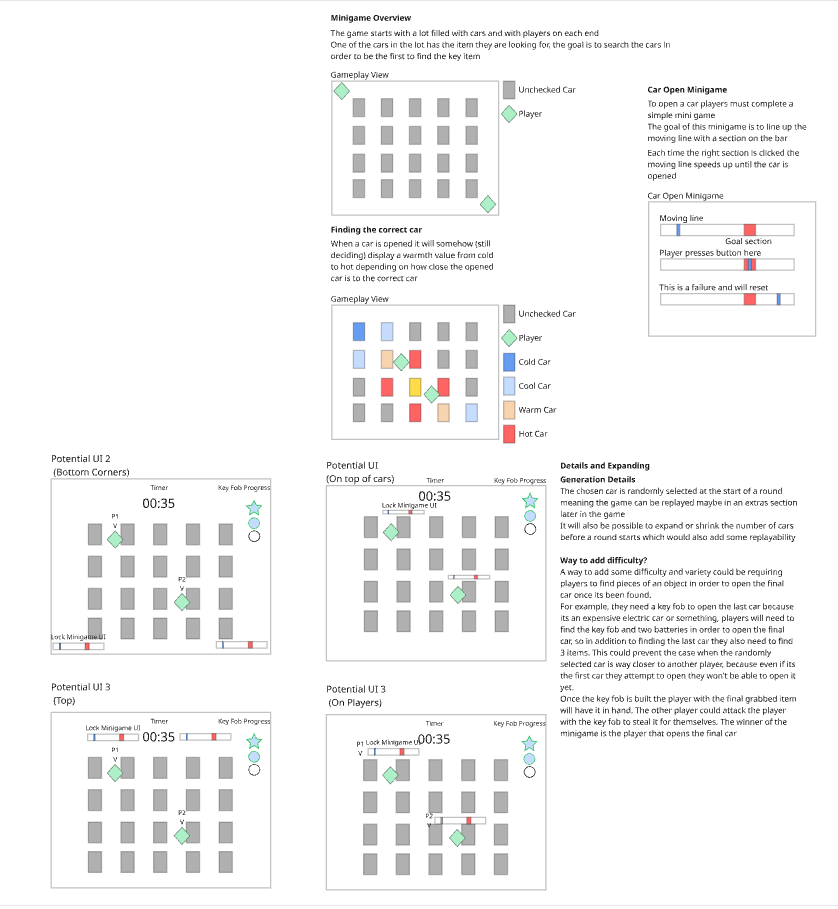

Hell’s Delivery is a couch co-op puzzle platformer
where you and a friend deliver packages for the devil.
Go on hellish adventures delivering unique and wacky
packages for the strange residents of hell.
The current project is still in development,
there is a vertical slice prototype playable on Itch.IO!
Character
Finite State Machine
Our character controller uses a finite state machine to control all of their actions. Most of the player’s logic is kept within their current state. Some examples of some states are Airborne state, Jumping State, Attacking State etc. This state machine is made to be generic meaning it can be used for many use cases aside from the player. For example our Hell Hound enemy uses the same basic state machine.

(Overview of the state machine)
No solution is perfect!
One issue I ran into was when I wanted multiple states to happen at the same time. If I want to have 2 different states active at the same time I need 2 state machines but the code can quickly get messy, next time I’d look into using an hierarchical state machine for a more complex character.
Character Physics
Our players use a system that takes their current velocity value and attempts to move it towards the target velocity value by an acceleration. This method allows our players to interact with their environment and each other easily without any stuttering.
Expanding on this the players actually float slightly above the ground meaning they can traverse intense terrains without getting stuck, this was also useful for having players bounce on each other’s heads without causing any weird collisions.
(basic movement)

(floating characters)
Game Feel
The goal with this player controller was something easy to pick up but fun to just move around with. Our target audience for this game has a very wide range of skill so we needed our character controller not to be too difficult to pilot.
Our player controller has all the basic game feel additions like jump buffering, coyote time and a quick turn but the quick turn is especially important for this character controller as it helps keep it accessible by offering quick and easy adjustments.
It works by multiplying the player’s acceleration value by the dot product of their current momentum and their target momentum based on an animation curve (opposite input = ~3x, same input = 1x) , so if they input the opposite value of their current movement direction they get a big boost in acceleration allowing them to adjust easily.
To make things a little more interesting for players, I added a few extra moves for them to play around with. For example If you press the attack button twice while in the air you get a dive, and if you attack and jump right after, you get a spin jump.
(Player's dive move)
(Player's spin jump)
Interactables
Interactable objects are important to our game as all NPCs and most puzzle elements will need to be interacted with in some way. So when making the interactable system I attempted to make something versatile and easy to implement for level designers.
This is where Unity Events came in.
Unity Events are essentially events that can be exposed and hooked up in the editor.
For example, let's look at our summoning circle. The summoning circle is basically a button that the players can hold by holding down interact, the summoning circle should be able to do countless different things such as holding up platforms and opening doors among many others. Since I use Unity Events all the level editor has to do is drag a script over to the interactable event (On Interact, On Interact Hold, On Interact End) and choose which function they want to activate.
This method is super clean on the code end and easy for a bigger team to use. This also means that (almost) any function in the entire project can be hooked up to this button by a simple drag and drop which allows us to create new and unique ideas and implement them as quickly as possible.
(Summoning Circle holding up platforms)
(Car Unlocking with interactable system)
Design Documents
Car Minigame
Below is the initial design for the game and a gif of the current version being played, this shows an example of my pipeline for creating new features!
The unlockable car is a simple minigame where the player has to time button presses a few times in a row in order to “unlock” a car. Initially I only created the car for use in this specific minigame scene but at some point in development we decided we also wanted these cars to be outside of this minigame environment. Because I had only planned for the car to be unlocked inside the minigame it relied on things only available inside the minigame scene, this posed a challenge and as a lesson on how to program things

(Design document of the Car Minigame)
(Gameplay prototype of the Car Minigame)
Crane Mechanic
This document outlines the basic functionality
of our Crane level mechanic. One player is able to
get in the crane and move objects around, while the
other player uses those objects for platforming